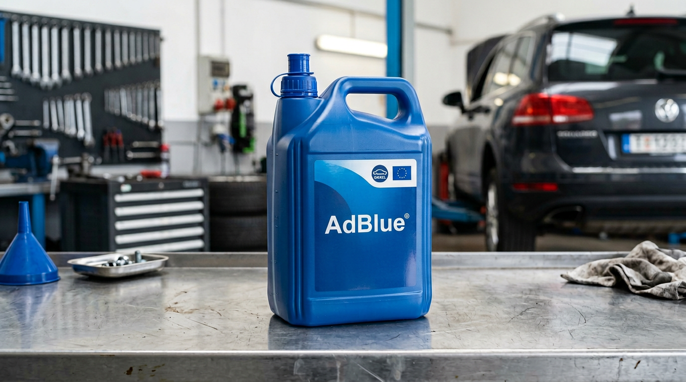

L’AdBlue (solution d’urée) est injecté dans les véhicules diesel Euro 6 pour réduire les oxydes d’azote (NOx) dans le catalyseur SCR. La suppression AdBlue chez AUTOTECH combine une reprogrammation moteur (AdBlue OFF) qui retire du calculateur toutes les stratégies liées à l’injection d’AdBlue, aux capteurs de niveau et de qualité, pour éviter les voyants et les limitations de couple.
Selon le véhicule, nous proposons également la déconnexion physique du réservoir et de l’injecteur. Nous intervenons sur la majorité des moteurs diesel Euro 6 avec des outils professionnels et des cartographies éprouvées.
